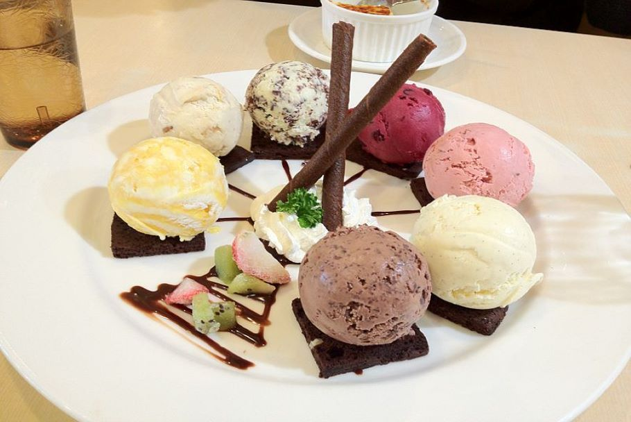

APPETIZERS
REWENA BREAD 10 Traditional Māori bread.
PAUA FRITTER 16 Finely diced pieces of paua, served with a side salad and horopito dressing.
RAW FISH 20 Dried snapper fish marinated in coconut cream, served with tomatoes and spring onions.
POACHED SALMON 22 Salmon poached in an orange and pistachio glaze, served with rewena bread.
SEAFOOD BASKET 25 Crumbed mussels, salt and pepper squid, crumbed hoki bites and garlic prawns.MAIN
FISH OF THE DAY 25 Beer battered fish and kumara fries, served with a side salad and homemade tartare.
MUSSELS AND SCALLOPS 25 Steamed mussel & scallop mousse, honey and soy broth.
SEAFOOD CHOWDER 30 Creamy chowder filled with terakihi, prawn, hoki, scallops and mussels, served with flatbread.
PORK BELLY 30 Slow cooked pork belly served on a bed of apple slaw with roasted kumara, and crispy noodle.
LAMB STEAK 33 New Zealand Lamb coated in a kawakawa crumb, served with Dijon mustard glazed carrots, roasted butternut squash and a mushroom Jus.
VENISON 33 Venison crusted with Horopito, served with glazed plums, cabbage salad and red wine Jus.
DESSERT
KAPITI ICE CREAM 10 Check for daily specials.
STEAM PUDDING 12 Golden syrup flavoured steam pudding, served with vanilla ice cream
STEAM PUDDING 12 Golden syrup flavoured steam pudding, served with vanilla ice creamMINI PAVLOVA 16 Mini Pavlova, served with kawakawa and lemon infused cream and fresh fruit.
BANOFFEE PIE 16 Toffee, fresh bananas and fresh cream.
